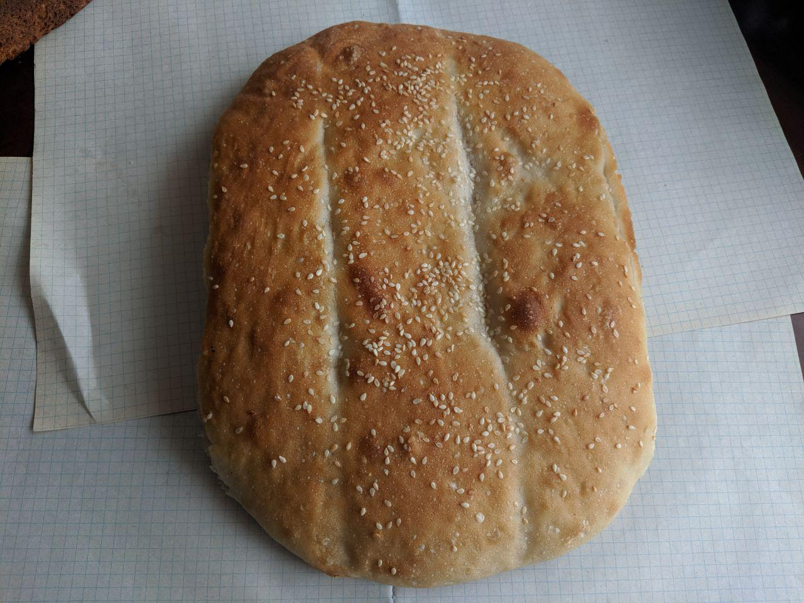

Хлеба из натуральных ингредиентов,
без улучшителей и консервантов

Хлеб "Ржаной край" формовой
Состав: мука ржаная, мука обдирная, закваска, вода, солод ячменный, соль пищевая йодированная, кориандрСрок годности: 72 часа
Масса: 350 г
Цена: 090 р
Хлеб "Ржаной край" зерновой
Состав: мука ржаная, мука обдирная, закваска, вода, семена тыквы, семена льна, семена подсолнечника, кунжут, солод ячменный, соль пищевая йодированная, кориандрСрок годности: 72 часа
Масса: 350 г
Цена: 100 р
Хлеб из пшеничной муки формовой
Состав: мука высшего и первого сортов, вода, дрожжи, соль пищевая йодированнаяСрок годности: 72 часа
Масса: 350 г
Цена: 085 р
Хлеб из пшеничной муки "Матнакаш"
Состав: мука высшего и первого сортов, закваска, вода, соль пищевая йодированная, кунжутСрок годности: 72 часа
Масса: 400 г
Цена: 110 р